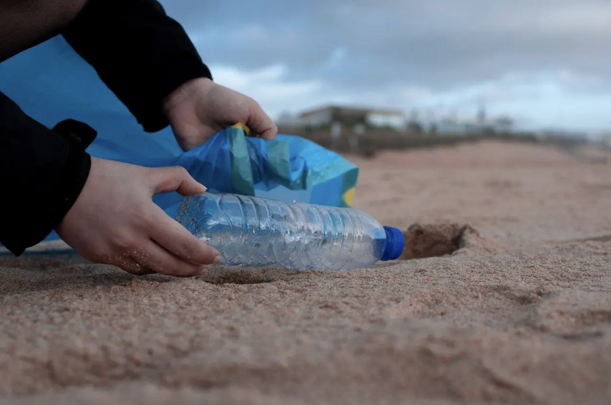

Wastewater Treatment

Likely the most effective way to reduce water pollution is by treating some of the water before it's reintroduced into the waterways. This is a highly effective solution because wastewater treatment facilities are able to remove nearly all pollutants in wastewater via a chemical, physical, or biological process. Sewage will be taken through several chambers of the facility to slowly reduce its toxicity levels. In order for wastewater treatment facilities to work exactly as intended, it's important that the equipment remains in great condition. There are a range of water treatment sensors that can be used to be certain that the contaminants are being properly removed from the water before the water is released back into the environment. These sensors include pH sensors, conductivity sensors, and oxidation reduction potential sensors.
Plastic Waste Reduction
Plastics are commonly washed into the ocean and other bodies of water, which only serves to degrade the quality of the water. It's believed that around 9-12 million tons of plastic reach the ocean every year, which is a number that needs to be reduced substantially to make sure that the quality of ocean water doesn't worsen even more. Along with water bottles, plastic is used in a myriad of different items that people use on an everyday basis, which include everything from clothes to various items around the home. To help reduce the amount of plastic waste that gets cycled into the environment, it's recommended that you avoid using plastics whenever possible. Seek alternatives for plastic bottles, plastic utensils, and straws. Whenever you use plastic, make sure that you recycle.
Water Conservation
If you want to do your part to keep water clean and pure in a manner that will protect the environment, it's important that you focus on water conservation when possible. There are many ways that you can conserve water on a daily basis. Whenever you're shaving or brushing your teeth, it's recommended that you keep the water turned off. If you take a shower every day, opt for shorter showers that don't go longer than you require. You could also decide to take a bath, which uses much less water. In the event that your landscape is outfitted with a garden, try to use only the amount of water that your plants require. Water is a scarce resource, which is why it's important that you try to lessen your water usage when you can.
Denitrification

Denitrification is a simple ecological process that’s designed to convert nitrates directly into nitrogen gas, which helps to prevent nitrate from being taken into the soil and contaminating the groundwater. When too much nitrate reaches groundwater, the nitrogen content of the water is far too high, which causes algae and phytoplankton to grow at an accelerated rate.
Stormwater Management

Another effective solution for protecting the environment and reducing the amount of water pollution is to manage stormwater when possible. When stormwater flows along sidewalks, streets, and lawns, it picks up harmful pollutants that are then pushed into storm drains, streams, and rivers. Stormwater can be treated and managed through a variety of different processes, which include everything from sand filtration and electrocoagulation to reverse osmosis and advanced oxidation. It's important to manage stormwater and the pollution within it because this water will eventually reach rivers, streams, and oceans, which can worsen the pollution in these bodies of water. Managing stormwater should help to lessen this issue and reduce the amount of pollution that reaches the ocean.
Green Agriculture

The agricultural sector uses upwards of 70 percent of the surface water supplies around the earth for everything from livestock production to farming. Unfortunately, agriculture is the primary cause of water pollution. Whenever it rains, the pesticides and fertilizes wash away with the stormwater, which takes viruses and bacteria into the waterways. It's possible, however, for agriculture to be more friendly to the environment. To foster the use of green agriculture, consider planting trees and other plants nearby bodies of water, which will keep chemicals from being washed away when it rains. You should also avoid using pesticides that contain harmful chemicals.